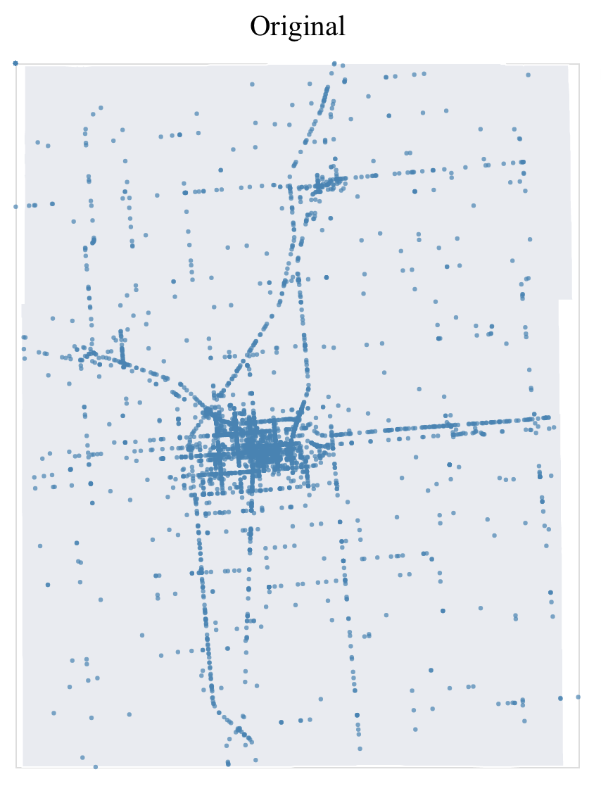
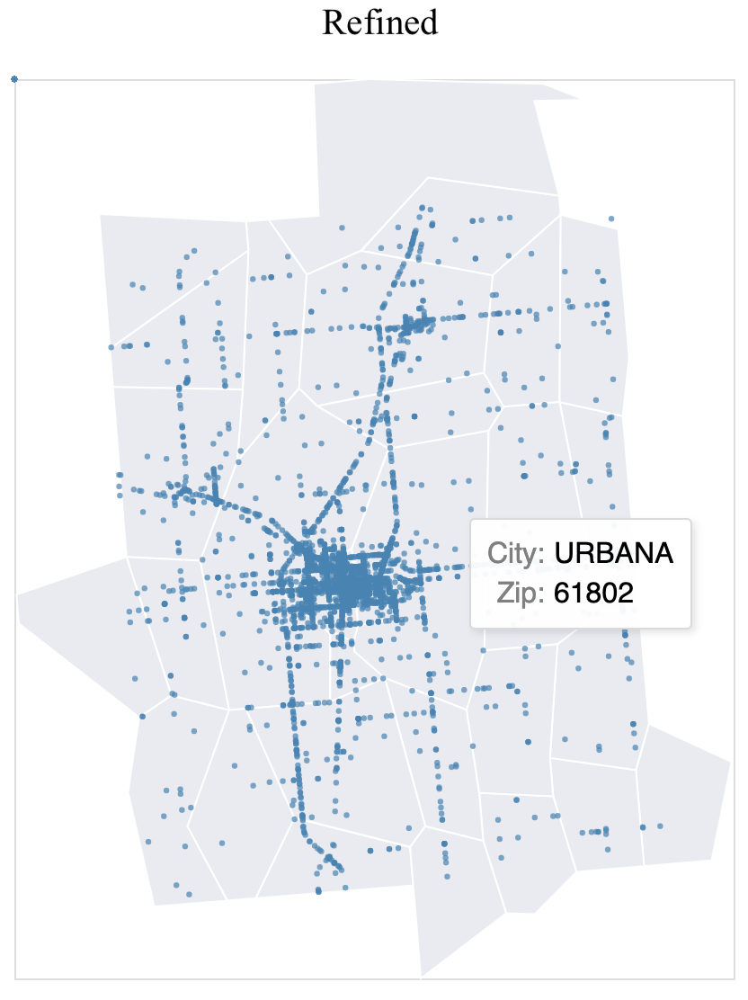
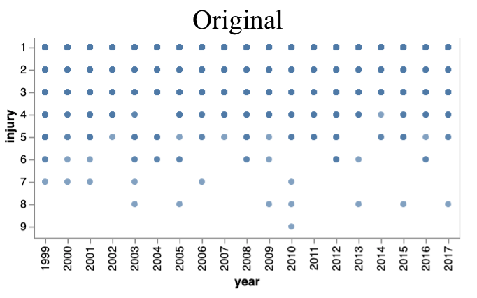
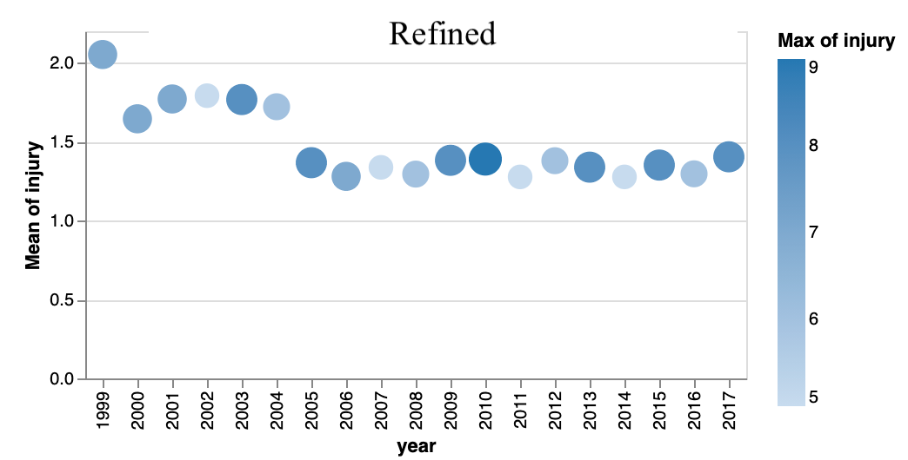
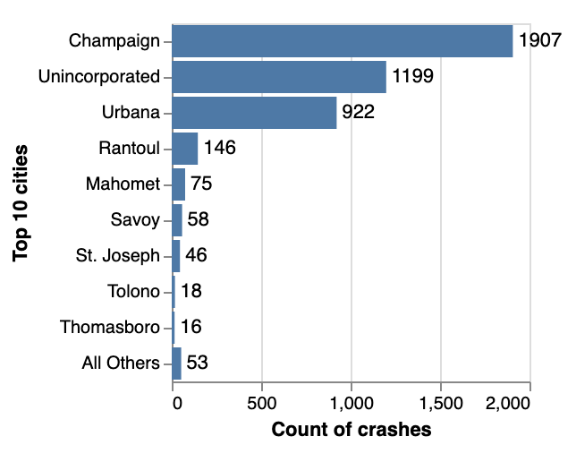
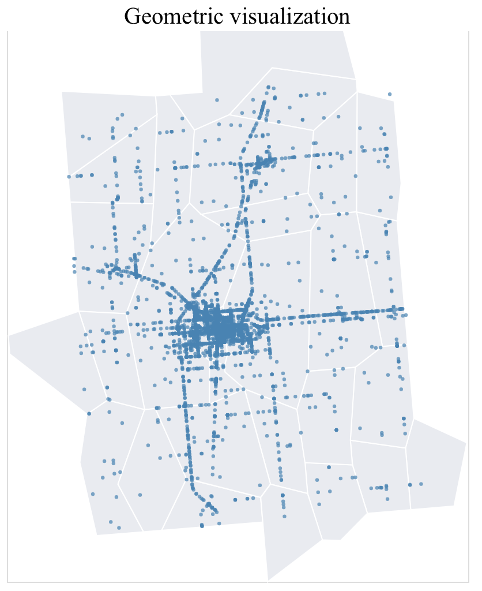
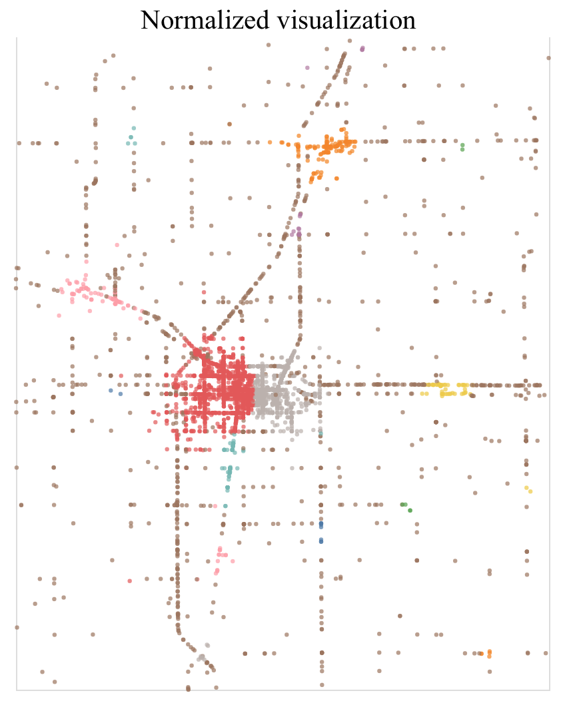

Challengens
-
Background of map
In the first version of the dotted map, I used a
county topojson as the background layer,
hoping to make the map more meaningful. But the topojson file does not have more detailed city-level
information so the bottom layer is more like a colored background instead of a map. So I replaced it
with an
us zipcode topojson and filtered out zipcodes in Champaign county only. Now the map have a
more meaningful background. I also added tooltip for that layer, displaying zipcodes and city names.
A benefit of this is that some records in the crash dataset does not have city recorded, after adding
the bottom layer, users can refer to that layer for additional information.


-
Statistics of data
The dataset only contains 3 numeric columns(year, fatality and injury) and none of them is
decimal which
makes the dataset less suitable for continuous visualizations. I first tried injury vs. year but
the dotted graph provides very limited information. After going over examples on the vega-lite
website,
I transformed it to a statistical scatterplot showing how max and average injury/fatality change every year.
By doing so, I was able to see a decreasing trend in both injury and fatality as time goes by. Also the
fatality
plot highlights crashes with extreme values, an accident with 4 fatalities in 2001 for example.


-
Top-K ranking
In premade visualization section, there is a bar graph showing count of crashes by year and city. I received
suggestions
about implementing the Top-K ranking features. Unfortunately I was not able to get it working on this
stacked bar graph.
But I did looked into that feature and use it to add a new bar graph, showing top 10 cities of crashes.

-
Map brushing
I planned to create a map visualization that allows users to brush a subsection and displays corresponding
statistics.
I've tried implementing the selection feature we learned inclass but failed. While looking for solutions, I
saw that vega-lite
currently does not
support brushing/zooming for geographic projections. So I normalized geometry data to 0-1 range so
that they can be plotted as a scatterplot. A tradeoff of doing so it that I cannot embed the zipcode layer
to the resulted plot. I set the default color of the map as "by city" so users can still have a sense of
area.

